Travel should feel
personal.
Worldscape was built around a simple idea: visitors should experience Sri Lanka with the comfort of a planned journey and the warmth of travelling with people who know the island.
More than moving from one attraction to the next.
We wanted to create a travel experience where the route fits the traveller — not the other way around. That means taking time to understand what you enjoy, building realistic days, keeping transport comfortable and leaving space for the unexpected moments that become the best memories.
From airport arrivals and hill-country mornings to roadside king coconuts, family days out and coastal sunsets, Worldscape focuses on the complete journey. Our goal is simple: help you see the Sri Lanka people talk about, and the Sri Lanka they often miss.
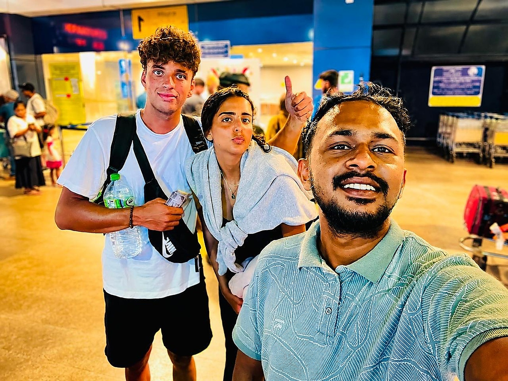
Real journeys. Real memories.
A selection of travellers who have explored Sri Lanka with us — from first arrivals to hill-country stops, city moments and private transport around the island.
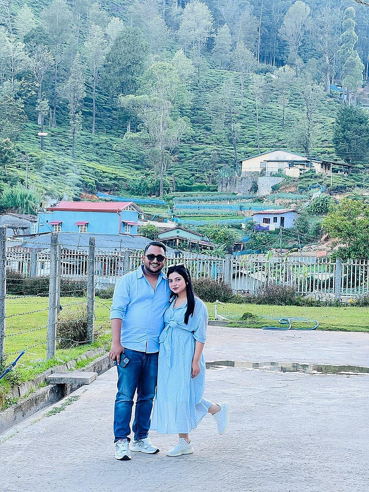
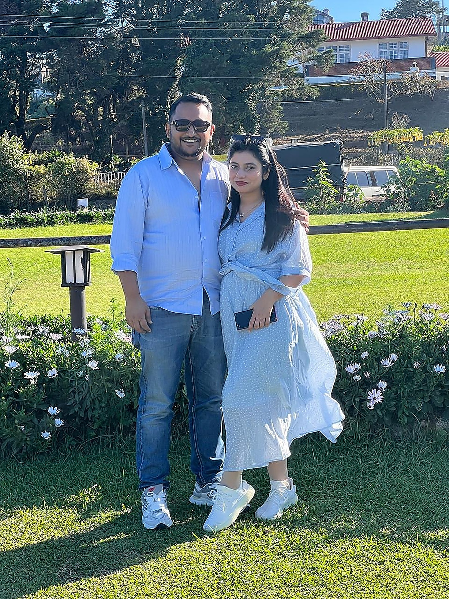
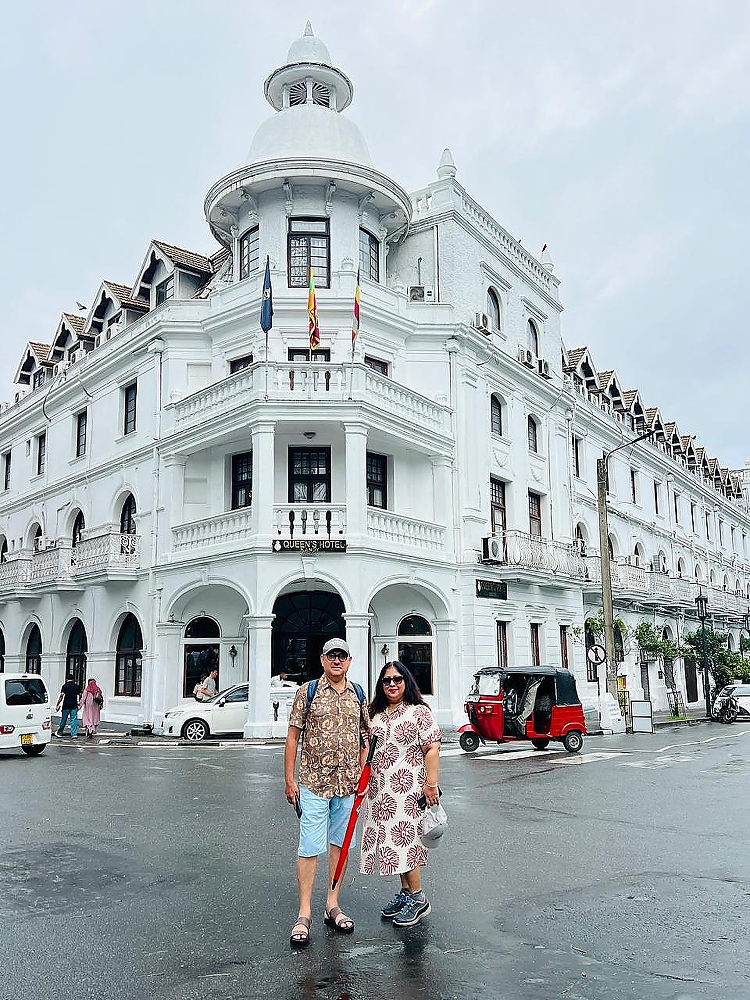
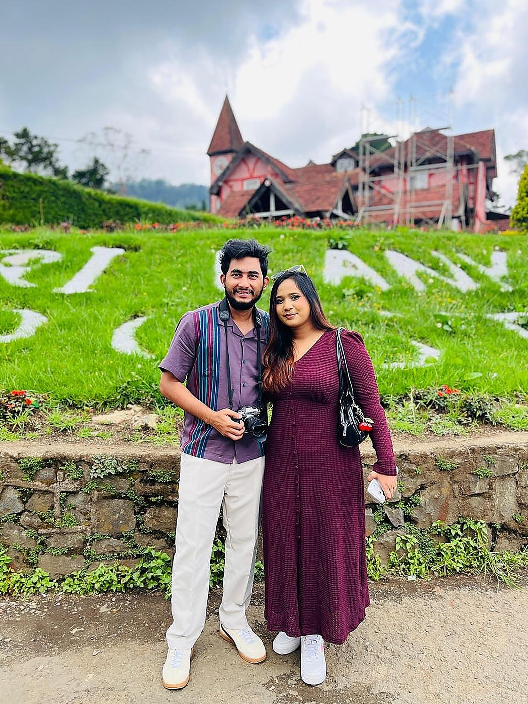
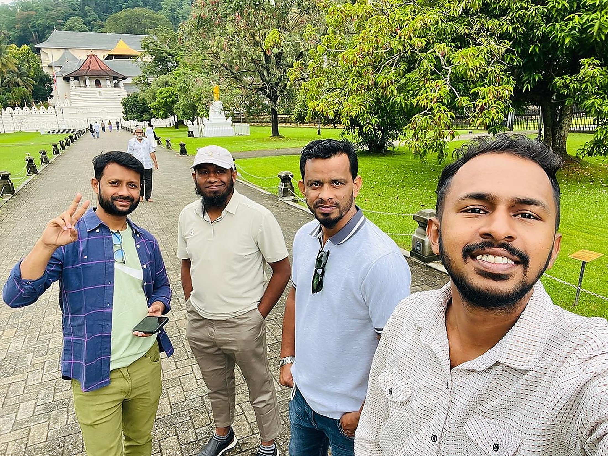
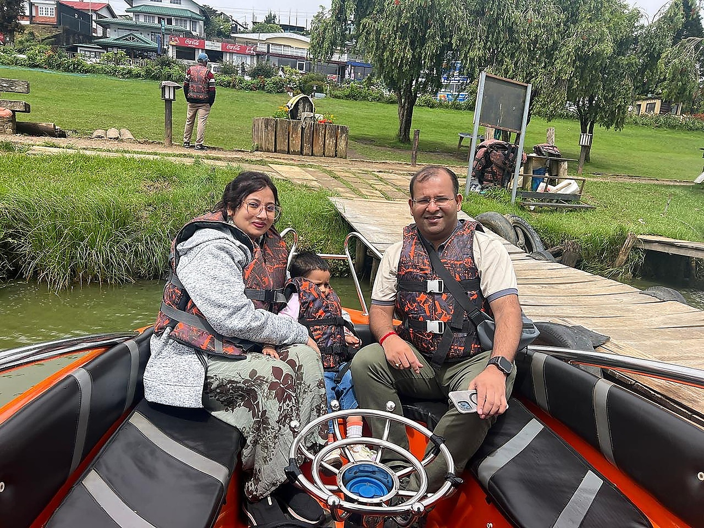
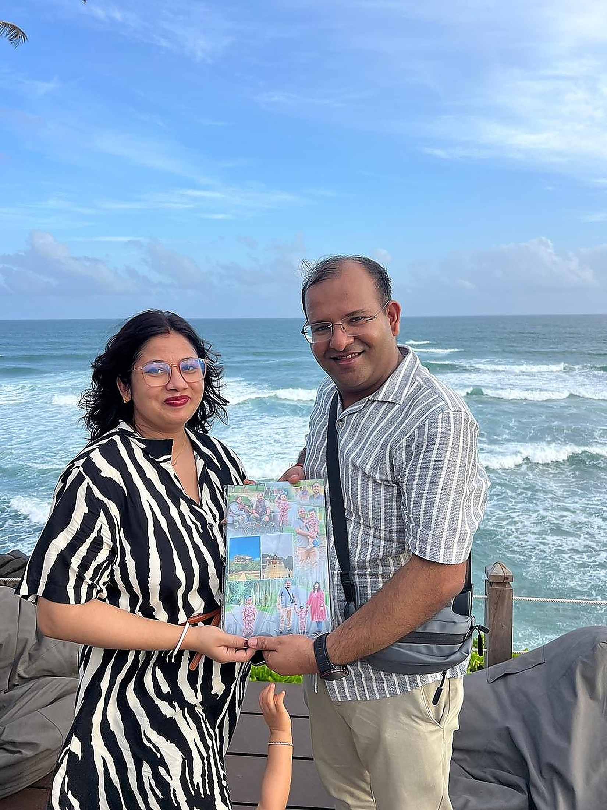
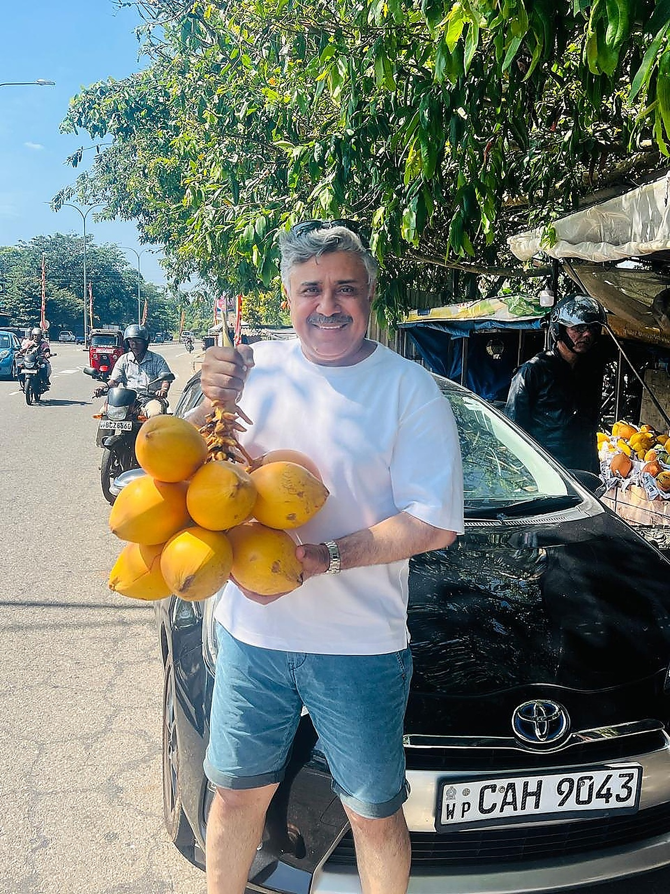
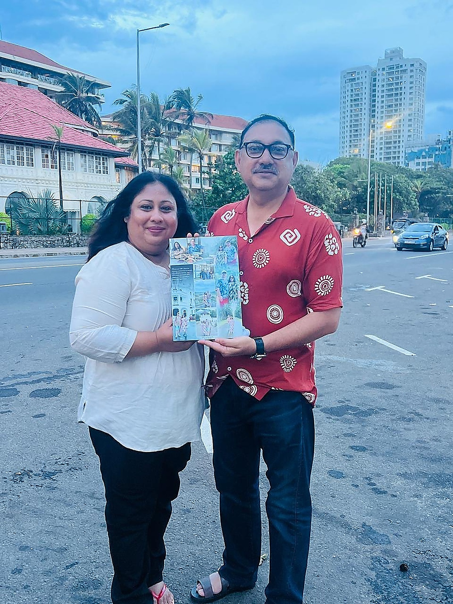
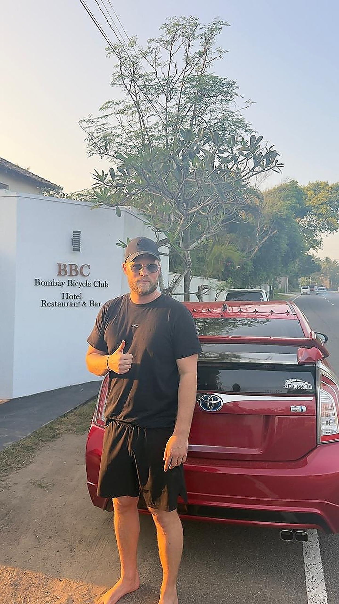
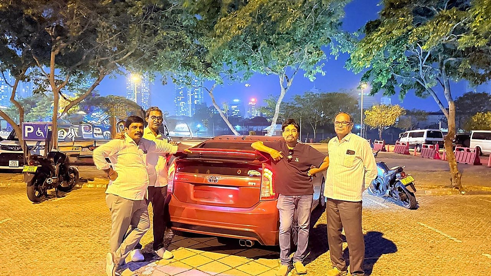
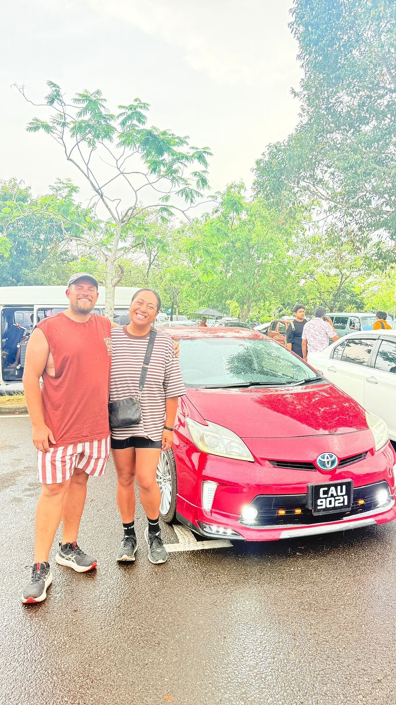